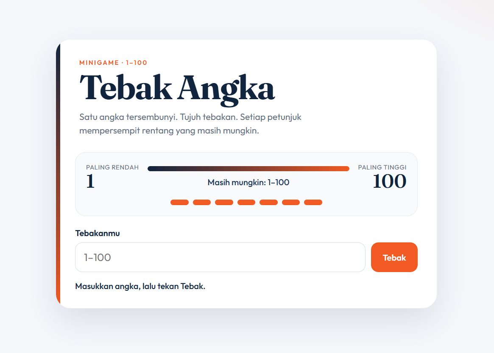

Guess The Number
Project yang didemokan langsung saat presentasi.

assets/images/project-demo.jpg
Ukuran saran 1280×800 px
Tentang project
Saya membuat project ini untuk mempelajari konsep randomize dan logika JavaScript dalam penentuan angka acak 1-100, sekaligus sebagai project yang disiapkan untuk tugas dan demonstrasi langsung saat presentasi PKL.
Teknologi
Peran saya
Frontend Developer & Scripter: Menelaah alur permainan dengan bantuan AI, lalu memodifikasi dan merangkai logika JavaScript secara mandiri untuk sistem acak, batasan 7 kesempatan tebakan, serta penyajian tampilan antarmuka interaktif.
Tantangan dan solusi
Tantangan terbesar adalah menghubungkan interaksi input angka dengan visualisasi rentang tebakan (range tracker) dan indikator kesempatan. Solusinya dengan mempelajari alur penanganan state di JavaScript, membaca referensi kode, dan melakukan penyesuaian logika bertahap.
Hasil dan pelajaran
Memahami konsep Math.random(), event listener form submit, manipulasi DOM real-time, dan pentingnya memberikan umpan balik (feedback) visual yang jelas kepada pemain.